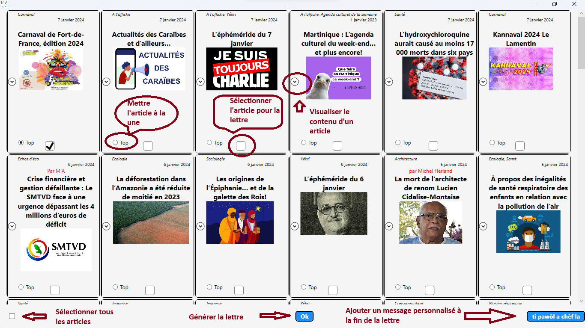

MadininApp
Comment utiliser l'application
MadininApp affiche sur l'écran principale les miniatures des articles de la page d'accueil du site
Site Madinin'Art
La vocation de l'application est de simplifier la création de La Lettre Madinin'Art

Au clic sur le bouton "Ti Pawol A Chef" Un éditeur aux fonctionalités minimales s'ouvre afin de permettre l'insertion d'un message personalisé à la fin de la lettre
L'éditeur utilise la police Verdana avec deux tailles de font disponible, et trois couleur.
Important afin de permettre un rendu html fidèle au contenu de l'éditeur il faut différencier le fait de faire un nouveau paragraphe avec le fait de passer à la ligne. En effet lors de la génération les deux notions sont interprétés différemment
Passage à la ligne : shift + entrée
Nouveau paragraphe : entrée
Des traits horizontaux sont affichés dans l'éditeur afin de permettre la distinction des différents paragraphes
Ces traits ne sont pas reproduit dans le rendu html
Installation
Pour telecharger l'installeur de l'application cliquer ici :
setup.exe